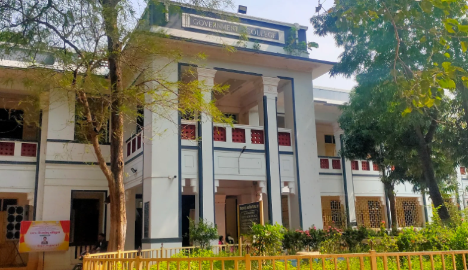
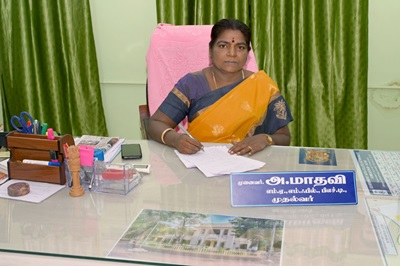

KUMBAKONAM-612001.
NOTIFICATION
|  |
Temple rich simple city is Kumbakonam on the River Cauveri. She has been and is, for centuries, down the annals of history, "the cultural cradle of South India". Sanctity, devotion, heritage, reverence and awareness to acquire and cherish the best mark her spirit till date. Caught in her native charm and greatness as though, the Britishers founded a provincial school in the year 1854 on her banks of Cauveri and aptly nick-named the pro-college-school as 'the Cambridge of South India'. As on Cambridge, so on Kumbakonam Cauveri grew the school to fullness and matured into a mini-varsity of learning and research as is witnessed today. Though easy as it might seem, to draw a time-line of the college-history would be very exacting and voluminous a task if undertaken seriously. As one among the first four Indian Educational Institutions started by the British, since 19th century, the pro-form of that college school was a true precursor to University Education in South India. Government Arts College (Autonomous) Kumbakonam of today with an ancestry dating back to 1854 is far senior and her sesquicentennial is at hand! She is the proud Alma Mater of her Alumni with merit and genius deserving world-renown: Not a few are the names that are on the lips of the learned as and when the college is recalled. Mathematical wizard Srinivasa Ramanujan, Silver-Tongue Srinivasa Sastri, Tamil Savant Thyagaraja Chettiar, Thamizh-thaathaa, Grand Sire Dr. U. Ve. Saminatha Iyer, eminent Principals like BilderBeck, Gopal Rao, Dr. A. V. Gopalachariyar, R.V. Krishnamachariyar, and a long line of them are fast in the College's memory-album. |
|  |
DR.A.MADAVY the banks of Cauveri as Cambridge on Cam, it has produced eminent scholars and professionals of no mean stature. The great mathematician Ramanujan, Rt. Hon. V. S. Srinivasa Sastry, the silver tongued orator, Tamil savant Thiyagaraja Chettiar and his successor to the Tamil Chair Dr. U. V. Saminatha Iyer, Principals Bilderbeck, Gopal Rao and a long line of them are ever in the niches of this college’s memory. With a long and rewarding history of achievement in education behind us, our College community continues to move forward together with confidence, pride and enthusiasm. I hope your visit to the website is really useful. |
Government Arts College (Autonomous) Kumbakonam - 612 002